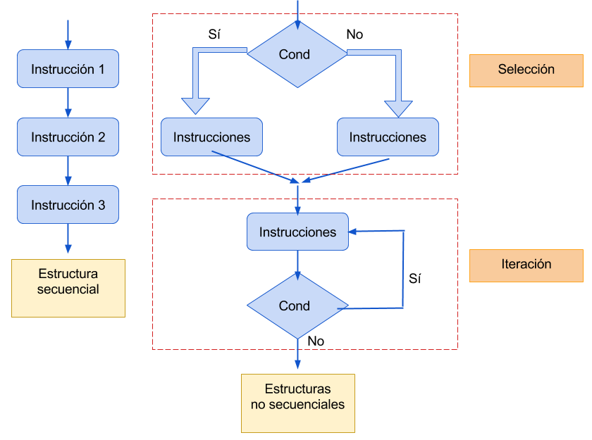
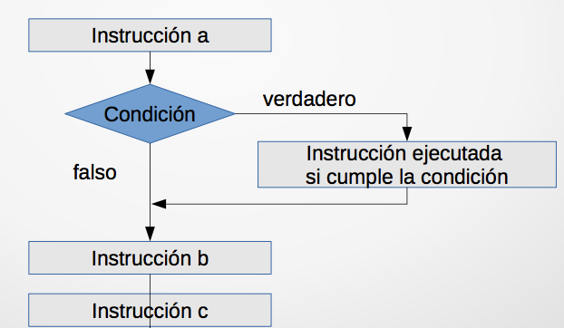
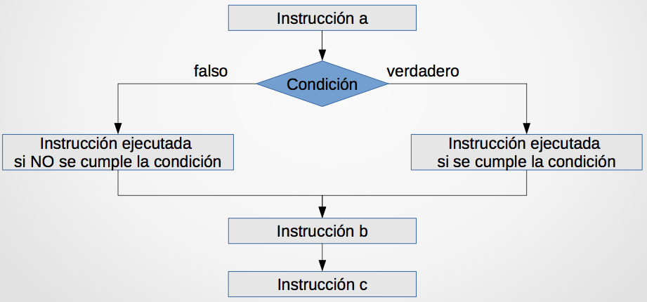
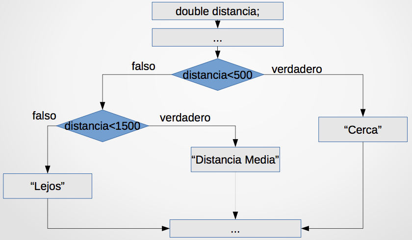
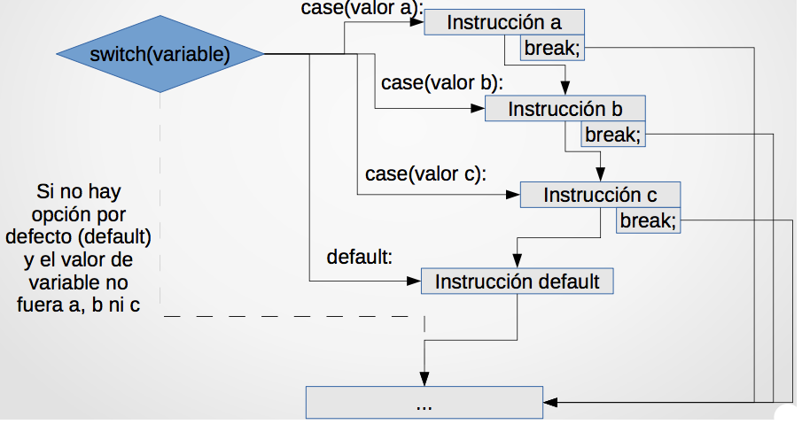
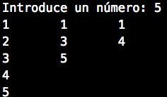

Tema 3: Sentencias de control¶
1. Programas y algoritmos¶
- Un algoritmo es un conjunto de instrucciones que permiten hallar la solución a un determinado problema.
- Un programa es un conjunto de sentencias escritas en un lenguaje determinado para que un ordenador lleve a cabo una tarea. Los programas codifican algoritmos.
Ejemplo. Tarea: Obtener el área de un triángulo
- Algoritmo: multiplicar la base del triángulo por la altura del mismo y dividirla entre dos
- Programa:
1 2 3 | int base = 3, altura = 5; double area = base * altura / 2.0; printf("El area de un triángulo de base %d y altura %d es %g\n", base, altura, area); |
En un determinado instante, el estado de un programa queda definido por el valor que tienen sus variables en ese momento. El estado de un programa es dinámico, y puede cambiar con la ejecución de sentencias dentro del mismo. Es imprescindible realizar las sentencias adecuadas en el orden adecuado.
2. Sentencias de control¶
El flujo de ejecución de un programa define el orden que siguen las sentencias durante la ejecución del mismo.
La estructura secuencial es aquella en la que las instrucciones o sentencias se ejecutan una a una en el orden establecido.
Ejemplo:
1 2 3 | int valorA = 11, valorB = 4, resultado; resultado = valorA / valorB; valorA = valorA + 1; // resultado = 2 |
No es lo mismo que:
1 2 3 | int valorA = 11, valorB = 4, resultado; valorA = valorA + 1; resultado = valorA / valorB; // resultado = 3 |
Se puede alterar esa secuencialidad usando estructuras no secuenciales, que permiten variar el flujo de control del programa dependiendo de ciertas condiciones. Las estructuras no secuenciales son:
- Estructuras de selección: Permite que se tomen rutas alternativas de acción dependiendo del resultado de una condición.
- Estructuras de iteración: Permite repetir un conjunto de sentencias.

3. Estructuras de selección¶
Permiten que el programa determine las sentencias a ejecutar en base a determinadas condiciones.
Las condiciones se presentan como operadores relacionales (condiciones booleanas), integrando como operandos valores, variables o constantes.
Suponen una bifurcación en la secuencia de ejecución de las instrucciones de un programa
Ejemplos donde se utilizan estructuras de selección:
- Si el robot no tiene batería: ir a la zona de carga
- Si el robot está cerca de un obstáculo: reducir su velocidad
- Si el semáforo esta en rojo: detenernos, en cualquier otro caso: continuar
Sentencia if¶
La sentencia if permite decidir qué secuencia de código se va a ejecutar a continuación en base a una condición.
La sintaxis de la sentencia if es:
1 2 3 4 | // Cuando la ejecución condicional afecta a una única línea if (condicion_a_cumplir) instrucción a realizar; |
1 2 3 4 5 | // Cuando la ejecución condicional afecta a una o más líneas if (condicion_a_cumplir) { instrucción(es) a realizar; } |
La semántica (funcionamiento) del if es el siguiente:
- Si la
condicion_a_cumplirdevuelve un valor verdadero (o distinto de 0), se ejecutará la secuencia de instrucciones a realizar. - Si la
condicion_a_cumplirdevuelve un valor falso (o 0), eliffinalizará sin ejecutar la sencuencia de instrucciones asociada, pasándose a ejecutar la sentencia siguiente alif.
Como hemos comentado, el lenguaje C nativo no incorpora el tipo bool, por lo que tenemos que incluir la librería #include <stdbool.h>para trabajar con booleanos. La condición del if admite variables de otro tipo (int, char, double, ...) y se manejan como una variable bool, tomando el valor false si vale 0 o true para cualquier otro valor. No es aconsejable.
Ejemplo de sentencia if:
1 2 3 4 5 6 7 8 9 | bool fumador = true; double dineroAhorrado = 500; ... if (fumador) dineroAhorrado = 0; ... if (dineroAhorrado > 1000 ) { fumador = false; } |
El uso de llaves es opcional si la instrucción a ejecutar tiene una única sentencia y es obligatorio si la instrucción tiene dos o más sentencias. Si no se añaden llaves, solamente la primera instrucción después del if (condicion_a_cumplir) será condicional: la segunda y sucesivas se ejecutarán siempre.
1 2 3 4 5 6 7 8 9 10 11 12 13 | bool condicionCumplida = false; if (condicionCumplida) printf("Primera instrucción \n"); printf("Segunda instrucción \n"); // se ejecuta siempre printf("Tercera instrucción \n"); // se ejecuta siempre if (condicionCumplida) { printf("Primera instrucción \n"); printf("Segunda instrucción \n"); printf("Tercera instrucción \n"); } |
condicion_a_cumplir puede obtenerse mediante la combinación (usando operadores lógicos) de diferentes (sub)condiciones.
Precedencia de operadores:
1 2 3 4 5 6 | 1. () 2. *, /, % 3. +, - 4. <, <=, >, >= – ==, != 5. && 6. || |
Ejemplo:
1 2 3 4 5 6 7 8 | bool oscuridad = true, bateriaAgotada = false, prioridad = false, camaraEncendida = true; int tiempoEnEspera = 100; ... if(oscuridad || bateriaAgotada || (tiempoEnEspera>60 && !prioridad)) cameraEncendida = false; |
Un programa con sentencias if puede visualizarse como un diagrama de la siguiente forma:
1 2 3 4 5 6 7 | instruccion_a; if(condicion) instruccionSiSeCumpleCondicion; instruccion_b; instruccion_c; |

Sentencia if-else¶
La sentencia if-elsees una forma ampliada de la sentencia if. La utilizamos cuando tenemos instrucciones que sólo queremos que se
ejecuten cuando no se cumple la condición (opción else)
La sintaxis de la sentencia if-elsees:
1 2 3 4 5 6 7 | if (condicion_a_cumplir) { instruccion(es)_a_ejecutar_condicion_verdadera; } else { instruccion(es)_a_ejecutar_condicion_falsa; } |
La semántica de la sentencia if-elsees:
- Si la
condicion_a_cumplirdevuelve verdadero, se ejecutainstruccion(es)_a_ejecutar_condicion_verdadera. - Si la
condicion_a_cumplirdevuelve falso, se ejecutainstruccion(es)_a_ejecutar_condicion_falsa.
El uso de llaves es idéntico a la sentencia if: opcional si la instrucción a ejecutar tiene una única sentencia y obligatorio si la instrucción tiene dos o más sentencias, tanto en la parte del ifcomo en el else.
Ejemplo de if-else:
1 2 3 4 5 6 7 8 | int dineroAhorrado = 25500; int precioCoche = 15000; if (dineroAhorrado < precioCoche) printf("Necesitas ahorrar, sólo tienes %d euros \n", dineroAhorrado); else printf("Ya puedes comprarte el coche de %d euros \n", precioCoche); |
Diagrama de sentencias if-else:
1 2 3 4 5 6 7 8 9 | instruccion_a; if(condicion) instruccionSiSeCumpleCondicion; else instruccionSiNoSeCumpleCondicion; instruccion_b; instruccion_c; |

Sentencias if anidadas¶
Podemos anidar condiciones usando la combinación else if:
1 2 3 4 5 6 7 8 9 | double distancia; ... if(distancia<500) printf("Cerca \n"); else if(distancia<1500) printf("Distancia media \n"); else printf("Lejos\n"); |
Diagrama sentencia if anidada:

También podemos anidar if-else con esta estructura, dependiendo del problema:
1 2 3 4 5 6 7 8 9 10 11 12 13 | if ( ...) { ... } else { if ( ... ) { ... } else { if ( ... ) { ... } } } |
Como siempre, hay que procurar buscar claridad, legibilidad y sencillez en nuestro programa. Si tenemos que anidar sentencias if, hacerlas lo más claras y eficientes posibles.
Sentencias condicionales en Python
Las estructuras de control de flujo condicionales, se definen mediante el uso de tres palabras claves reservadas, del lenguaje: if , elif (como el else-ifde C) y else.
Veamos su sintaxis con algunos ejemplos:
1 2 3 4 | if semaforo == verde: print "Cruzar la calle" else: print "Esperar" |
1 2 3 4 5 6 | if compra <= 100: print "Pago en efectivo" elif compra > 100 and compra < 300: print "Pago con tarjeta de débito" else: print "Pago con tarjeta de crédito" |
1 2 3 4 5 | importe_a_pagar = total_compra if total_compra > 100: tasa_descuento = 10 importe_descuento = total_compra * tasa_descuento / 100 importe_a_pagar = total_compra – importe_descuento |
Operador ?¶
Es una herramienta útil para evaluar expresiones condicionales de forma abreviada.
Su sintaxis general es la siguiente:
1 | expresión1 ? expresión2 : expresión3; |
Semántica:
Si la expresión1 es cierta, entonces se evalúa la expresión2, en
otro caso se evalúa la expresión3.
Ejemplo:
1 2 3 4 5 6 7 8 | a = b < 0 ? -b : b; /* Si el valor de b es menor que 0, la expresión completa tomará el valor de -b, en otro caso tomará el valor de b. En definitiva, a la variable a se le asigna el valor absoluto de b dependiendo de la condición b < 0. La sentencia anterior completa es equivalente a: if (b<0) a = -b; else a = b; */ |
Sentencias switch¶
La sentencia switchpermite seleccionar entre múltiples opciones.
La sintaxis de la sentencia switches:
1 2 3 4 5 6 7 8 9 10 | switch (variable_entera_a_evaluar) { case resultado_a: instruccion_a_realizar_resultado_a; break; case resultado_b: instruccion_a_realizar_resultado_b; break; default : instruccion_a_realizar_resultado_diferente_a_b; } |
La semántica de la sentencia switches:
- Se evalúa en primer lugar la expresión que va entre paréntesis a continuación del
switch. Debe dar como resultado un número entero. - Después la ejecución empieza en el primer
casecuya expresión coincida con el resultado obtenido envariable_entera_a_evaluar. Se ejecutan todas las instrucciones hasta elbreak. - El
defaultse ejecuta si no ha habido ningúncasecuyo resultado coincida convariable_entera_a_evaluar. - Si hubiesen dos o más sentencias
caseseguidas sinbreak, se ejecutan todas hasta llegar albreak.
Diagrama:

Ejemplo sentencia switch-case:
1 2 3 4 5 6 7 8 9 10 11 12 13 14 15 | int numHermanos = 6; // Prueba a usar 0,1,2,3,4 ... switch (numHermanos) { case 0: printf("Hijo/a único\n"); break; case 1: printf("Pareja \n"); break; case 2: printf("Familia numerosa \n"); break; default : printf("Familia muy numerosa \n"); } |
Cada bloque de sentencias casedebe terminar con un break. Si no es así, el compilador entiende que también debe ejecutarse el bloque del case siguiente y lo engloba como el mismo bloque. Ejemplo:
1 2 3 4 5 6 7 8 | // Sentencias case sin break // Si contador vale 1 se ejecutarán las dos sentencias `printf`: switch (contador) { case 1: printf("Opcion 1"); case 2: printf("Opcion 2"); } |
Lo anterior es equivalente a:
1 2 3 4 5 6 | switch (contador) { case 1: case 2: printf("Opcion 1"); printf("Opcion 2"); } |
Ejemplo de enumeraciones y switch:
1 2 3 4 5 6 7 8 9 10 11 12 13 14 15 16 17 18 19 | enum paloPoker {pica, corazon, trebol, diamante}; enum paloPoker miCarta = pica; switch (miCarta) { case diamante: printf("Diamante \n"); break; case trebol: printf("Trébol \n"); break; case corazon: printf("Corazón \n"); break; case pica: printf("Pica \n"); break; default : printf("La carta no es de poker \n"); } |
Ejemplo con caracteres (internamente se almacenan con un valor entero, su valor ASCII):
1 2 3 4 5 6 7 8 9 10 11 12 13 14 15 16 17 18 19 20 21 22 | char letra; printf("Introduzca una letra: "); scanf("%c", &letra); switch(letra) { case 'a': printf("Se ha pulsado una a."); break; case 'e': printf("Se ha pulsado una e."); break; case 'i': printf("Se ha pulsado una i."); break; case 'o': printf("Se ha pulsado una o."); break; case 'u': printf("Se ha pulsado una u."); break; default: printf("Otro carácter"); } |
Ejercicios¶
- Escribe un programa que pida dos números por teclado y nos indique cual es el mayor, cual es el menor o si son iguales.
- Escribe un programa que pida dos número por teclado y nos diga si uno es múltiplo del otro (divisible).
- Escribe un programa que pida tres números por teclado y nos diga cuál es el menor.
- Escribe un programa que pida una nota de 0 a 10 y la muestre en forma de texto: "Suspenso", "Aprobado", "Notable", "Sobresaliente".
- Escribe un programa que pida dos números por teclado y una de las cuatro operaciones aritméticas de una calculadora (+, -, *, /). Devuelve el resultado de la operación aplicada a los dos números.
- Escribe un programa que calcule el índice de masa corporal IMC de una persona. Se debe introducir el peso en kg y la altura en m. El IMC = peso / (altura * altura). El programa muestra por pantalla el tipo de peso: - IMC < 18.0 --> "Inferior al normal" - 18.1 - 24.9 --> "Normal" - 25.0 - 29.9 --> "Sobrepeso" - IMC > 30.0 --> "Obesidad"
- Escribe un programa que solicite al usuario una letra (mayúscula o minúscula) e indique si es una vocal o una consonante.
4. Estructuras de iteración¶
Un bucle es una estructura de programación formada por una secuencia de sentencias, denominada cuerpo del bucle, que se puede repetir varias veces. Cada ejecución del cuerpo del bucle es una iteración. El número de veces que se ejecuta el cuerpo del bucle está controlado por una condición (expresión lógica).
Por lo tanto, a la hora de diseñar e implementar un bucle, hay que tener en cuenta dos aspectos:
- El cuerpo del bucle
- Cuántas veces debe iterarse el cuerpo del bucle
El lenguaje C proporciona tres sentencias de iteración: while, do-while y for.
Se pueden agrupar en dos tipos, dependiendo si conocemos de antemano el número de iteraciones:
- Bucles determinados: Sabemos a priori el número de veces que se repetirá el bucle. Es el caso del bucle
for - Bucles indeterminados: No sabemos de antemano cuántas iteraciones se realizarán. Es el caso de los bucles
whileydo-while
Bucle while¶
Permite repetir cero o más veces la ejecución de una secuencia de sentencias mientras la condición sea verdadera.
Sintaxis:
1 2 3 | while (condicion_a_cumplir) { secuencia_de_instrucciones; } |
Semántica:
- Mientras la
condicion_a_cumplirdevuelva un valor verdadero (distinto de cero), se ejecutará repetidamente lasecuencia de instrucciones, evaluando nuevamente la condición en cada iteración. - Si la
condicion_a_cumplirdevuelve un valor falso (igual a cero), finalizara la ejecución de la sentenciawhile.
La condición_a_cumplirdebe ir entre paréntesis. La condición se sitúa al inicio, por lo que es posible que si inicialmente no se cumple, no se llegue a ejecutar nunca la secuencia_de_instrucciones.
Ejemplo:
1 2 3 4 5 | int cargaBateria = 0; while (cargaBateria < 100) { cargaBateria = cargaBateria + 1; } |
Otro ejemplo:
1 2 3 4 5 6 7 8 9 10 11 12 13 | int caramelos = 0; char res; printf("¿Quieres un caramelo (s/n)?:"); scanf("%c", &res); while (res == 'S' || res == 's') { caramelos = caramelos + 1; printf("¿Quieres otro caramelo? (s/n):"); scanf("\n%c", &res); //"\n" es para que res ignore el intro } // fin de la sentencia while printf("Te he dado %d caramelos\n", caramelos); |
Bucle do-while¶
Permite repetir una o más veces la ejecución de una secuencia de sentencias mientras la condición sea verdadera.
Sintaxis:
1 2 3 | do { secuencia_de_instrucciones; } while (condición_a_cumplir); |
Semántica:
- En primer lugar se ejecuta la
secuencia_de_instrucciones. - Después se evalúa la
condicion_a_cumplir. Si el resultado es verdadero se repite la ejecución desecuencia de instrucciones. Si es falso, finaliza la ejecución.
Ejemplo:
1 2 3 4 5 6 7 8 9 10 | int num; int suma = 0; do { printf("Introduzca un número: (0 para finalizar)"); scanf("%d", &num); suma += num; }while (num != 0); printf("La suma de todos los números introducidos es: %d\n", suma); |
Al situarse la condición se sitúa al final, la secuencia_de_instrucciones se ejecuta al menos una vez.
Bucle for¶
Permite repetir un número determinado de veces la ejecución de una secuencia de instrucciones. El número de iteraciones del bucle es controlado por una variable usada como un contador.
Es un bucle determinado porque conocemos de antemano el número de iteraciones.
Sintaxis:
1 2 3 | for (inicialización_contador; condicion; modificación_contador){ secuencia_de_instrucciones; } |
Semántica:
- Primera vez que se ejecuta:
- Se ejecuta la
inicialización_contador - Se evalúa la
condición. Si el resultado es verdadero se ejecuta lasecuencia_de_instrucciones. Si es falso, finaliza. - Segunda vez y sucesivas ejecuciones:
- Se ejecuta la
modificación_contador - Se evalúa la
condición. Si el resultado es verdadero se ejecuta lasecuencia_de_instrucciones. Si es falso, finaliza.
Ejemplos:
1 2 3 | for (i = 0; i < 10; i++) { printf ("Esta es la iteración %d", i); } |
Ejemplo con un incremento de 2 en 2:
1 2 3 4 5 6 7 | int i; for (i = 6; i <= 20 ; i+=2) { // incremento de 2 en 2 if (i % 3 == 0) // múltiplos de 3 printf("%d ", i); } // Imprime 6 12 18 |
Cualquier bucle forse puede escribir con un bucle while:
1 2 3 | for (expresión_1; expresión_2; expresión_3) { secuencia de sentencias; } |
Es equivalente a:
1 2 3 4 5 6 | expresión_1 ; while (expresión_2) { secuencia de sentencias; expresión_3; } |
El equivalente usando while del ejemplo anterior es:
1 2 3 4 5 6 | i = 0; while(i < 10) { printf ("Esta es la iteración %d", i); i++; } |
Pero hay que utilizar siempre el bucle adecuado. Para saber qué tipo de bucle hay que usar:
- Si el cuerpo del bucle (secuencia de instrucciones) se tiene que ejecutar al menos una vez:
do-while - Si no (0 ó más veces):
- Si no sabemos de antemano el número de iteraciones:
while - Si sabemos el número de iteraciones (usamos un contador):
for
Variables en los bucles¶
En los bucles se suelen utilizar variables para unas tareas específicas:
- Contadores: son variables destinadas a contener un valor que se irá incrementando o decrementando en una cantidad fija. Se suelen utilizar para el control de procesos repetitivos.
- Acumuladores: Son variables destinadas a contener distintas cantidades provenientes de los resultados obtenidos en operaciones aritméticas previamente analizadas de manera sucesiva, lo que nos permitirá obtener el total acumulado de dichas cantidades. A diferencia de los contadores, no controlan los procesos repetitivos. Su inicialización depende de en qué operación matemática van a ser utilizados.
- Interruptores (switches): también denominados conmutadores o indicadores, son variables que pueden tomar dos únicos valores considerados como lógicos y opuestos entre sí a lo largo de todo el programa (0 ó 1, 1 ó -1, Verdadero o Falso, on/off, etc.). Su objetivo es recordar en un determinado lugar del programa un suceso determinado o hacer que dos acciones diferentes se ejecuten alternativamente en un proceso repetitivo. También deben ser inicializados. No se debe abusar de su utilización cuando no sea necesario.
Ejercicio:
Implementa un programa que lea números que el usuario introduzca por teclado hasta que introduzca el cero. El programa tiene que imprimir la suma de todos los números introducidos y el número de números que se han introducido.
Validación de datos¶
Cuando estamos desarrollando un programa es frecuente que nos pidan por teclado un número que esté en un rango determinado (por ejemplo entre 1 y 10) o que nos pidan unos determinados caracteres (por ejemplo 's' o 'n'). Normalmente en estos casos, si el dato introducido no es válido, se tiene que volver a solicitar un nuevo dato hasta que sea correcto. Para ello utilizamos bucles que pidan repetidamente el dato mientras no sea correcto.
Por ejemplo, nos piden un número par. Si no es par, se tiene que volver a pedir:
1 2 3 4 5 6 | int num; do { printf("Introduce un número par: "); scanf("%d", &num); }while(num % 2 != 0); //repetir mientras no sea par |
Bucles anidados¶
Se puede utilizar un bucle dentro de otro. Para cada iteración del bucle exterior, se ejecuta completo el bucle interior.
Ejemplo, imprimimos las posiciones de una matriz:
1 2 3 4 5 6 7 8 9 10 11 12 13 14 | #define TAM 10 int main() { int fil, col; for (fil = 0; fil < TAM; fil++){ for (col = 0; col < TAM; col++) { printf("%4d-%d", fil, col); //%4d añade 4 espacios delante del entero } printf("\n"); } return 0; } |
Bucles en Python
Bucle while en Python:
1 2 3 4 | num = 1 while num <= 10: print "El número es: ", num num = num + 1 |
Bucle for en Python:
Ejemplo que itera sobre una lista:
1 2 3 4 | lista_animales = ['gato', 'perro', 'pez'] for animal in lista_animales: print "El animal es:", animal |
Ejemplos de bucles en C¶
Ejemplo con bucle while. Utilizamos el bucle indeterminado whileporque no sabemos de antemano el número de iteraciones: el bucle terminará cuando el usuario introduzca un cero.
1 2 3 4 5 6 7 8 9 10 11 12 13 14 15 16 17 18 19 20 21 22 | /* Obtener la media de una lista de números. La lista termina cuando se introduce el número cero */ void main() { int total = 0; float num = 0, media = 0; printf(“Dime un número: ”); scanf(“%f”, &num); while(num != 0) { media = media + num; total++; printf(“Dime otro número: ”); scanf(“%f”, &num); } if(total != 0) printf(“La media es %f.\n”, media/total); else printf(“No hay media.\n”); } |
Ejemplo con bucle do-while
1 2 3 4 5 6 7 8 9 10 11 12 13 14 15 16 17 18 19 20 | /* Calcular el número más grande de una lista de números mayores que cero. La entrada de números terminará cuando se introduzca un número negativo o cero. */ void main() { int num, max = 0; do { printf(“Dame un número: ”); scanf(“%d”, &num); if(num > max) max = num; } while(num>0); if(max != 0) printf(“El número más grande es %d.\n”, max); else printf(“No hay máximo.\n”); } |
Ejemplo con bucle for y do-while
1 2 3 4 5 6 7 8 9 10 11 12 13 14 15 16 17 18 19 20 21 22 | #define NUM_PARCIALES 5 // Número de exámenes parciales int main() { float nota_parcial, nota_final; float suma; int i; suma = 0; // Introducir las notas de todos los parciales y sumarlas (sólo cuando el dato introducido sea correcto) for (i = 1; i <= NUM_PARCIALES; i++) { do { printf("Dime tu nota del parcial %d\n", i); scanf("%f", ¬a_parcial); } while (nota_parcial < 0.0 || nota_parcial > 10.0); suma = suma + nota_parcial; } // Calcular la nota media e imprimirla por pantalla nota_final = suma / NUM_PARCIALES; printf("Tu nota final es: %.2f\n", nota_final); //%.2f imprime sólo dos decimales return 0; } |
Factorial de un número:
1 2 3 4 5 6 7 8 9 10 11 12 | int n; int res = 1; printf("Introduce un número n: "); scanf("%d", &n); do { res *= n; n--; }while(n > 1); printf("El factorial de %d es %d\n", n, res); |
Ejercicio: Haz el ejercicio anterior (factorial de un número) utilizando un bucle for
5. Traza de ejecución de un programa¶
Se utiliza para estudiar la secuencia de estados por los que pasa un programa, es decir, el valor que van tomando las variables instrucción a instrucción. Las variables almacenan el estado de un programa y mediante los pasos de ejecución se va modificando su estado. Se utilizan principalmente para depurar un programa (corregir errores de ejecución) o para comprender qué hace un programa o parte del mismo.
La traza se lleva a cabo normalmente mediante la ejecución manual de forma secuencial de las sentencias que componen el programa. También existen herramientas de depuración que nos permiten ejecutar paso a paso, o parar la ejecución en un punto concreto para observar el estado del programa. Por ejemplo el depurador gdb.
Ejemplo:
Realiza una traza de ejecición del siguiente programa y explica lo que hace:
Para realizar la traza tenemos que hacer una tabla de este estilo:
i i * i res 1 1 1 2 4 5 3 9 14 4 16 30 5 25 55 6 36 91 7 49 140 8 64 204 9 81 285 10 100 385 ¿Qué hace el código?
Veamos otro ejemplo:
Todos los días paso por una librería y me compro una serie de libros siguiendo este patrón
- día 1 → 1 libro
- día 2 → 2 libros
- día N → N libros
Si tengo una estantería donde caben M libros ¿ qué día llegaré a casa y no podré poner todos los libros que he comprado ?
Programa:
Traza:
Iteración dia capacidadActual 1 1 0 + 1 = 1 2 2 1 + 2 = 3 3 3 3 + 3 = 6 4 4 6 + 4 = 10 5 5 10 + 5 = 15 6 6 15 + 6 = 21
Ejercicios resueltos¶
Ejercicio 1
Escribe un programa que lea cantidades y precios y al final indique el total de la factura. Primero se pregunta la cantidad vendida, tras lo cual el usuario introducirá un número entero positivo. Después se pregunta el precio que será un número decimal positivo. La lectura termina cuando en la cantidad se introduzca un cero. Si es así se escribirá el total.
1 2 3 4 5 6 7 8 9 10 11 12 13 14 15 16 17 18 19 20 21 22 23 | int main(){ int n; double precio, total=0; do{ do{ printf("\nIntroduzca la cantidad vendida: "); scanf("%d",&n); }while(n<0); // validación de datos if (n>0){ do{ printf("Introduzca el precio: "); scanf("%lf",&precio); if (precio > 0) total+=n*precio; }while(precio<0); // validación de datos } }while(n!=0); printf("Total vendido = %.2f", total); return 0; } |
Ejercicio 2
Escribe un programa que escriba la tabla de multiplicar de un número pedido entre 1 y 10
1 2 3 4 5 6 7 8 9 10 11 12 13 14 | int main() { int num, i; do { printf("Introduce un num entre 1 y 10: "); scanf("%d", &num); }while(num < 1 || num > 10); // validación de datos for(i = 1; i <= 10; i++) { printf("%d x %d = %d\n", i, num, i * num); } return 0; } |
Ejercicio 3
Escribe un programa que lea un número entero y positivo y que escriba tres columnas. La primera cuenta desde uno hasta el número escrito contando de uno en uno; la segunda columna contando de dos en dos y la tercera de tres en tres.

1 2 3 4 5 6 7 8 9 10 11 12 13 14 15 16 17 18 19 20 21 22 23 | int main(){ int col1 = 1, col2 = 1, col3 = 1; int n; printf("Introduce un número: "); scanf("%d",&n); while(col1 <= n){ printf("%d",col1); if(col2 <= n) { printf("\t%d",col2); //\t para tabular if(col3 <= n){ printf("\t%d",col3); col3 += 3; } col2 += 2; } printf("\n"); col1++; } return 0; } |
Ejercicio 4
Escribe un programa que muestre un menú como este:
- Salir
- Sumatorio
- Factorial
Tras mostrar el menú, el programa debe leer un número del 1 al 3:
- si se elige 1, el programa acaba.
- si se elige 2 se calcula el sumatorio del número
- si se elige 3 se calcula el factorial
En las opciones 2 y 3 el programa pedirá el número sobre el que se calcula el sumatorio o el factorial. Tras calcular el sumatorio o el factorial e indicar el resultado, el programa volverá a mostrar el menú y así sucesivamente.
1 2 3 4 5 6 7 8 9 10 11 12 13 14 15 16 17 18 19 20 21 22 23 24 25 26 27 28 29 30 31 32 33 34 35 36 37 38 39 40 41 42 43 | #include <stdio.h> #define SALIR 1 int main(){ int seleccion; int num, i; int res; do{ do{ printf("******************\n"); printf("1 Salir\n"); printf("2 Sumatorio\n"); printf("3 Factorial\n"); printf("******************\n"); printf("Escriba su opcion: "); scanf("%d", &seleccion); } while(seleccion!=1 && seleccion!=2 && seleccion!=3); switch(seleccion){ case 2:/* Sumatorio */ printf("Escriba el numero sobre el que quiere el sumatorio: "); scanf("%d", &num); res = 0; for(i = 0;i <= num; i++) res += i; printf("El sumatorio es: %d\n", res); break; case 3: /* Factorial */ printf("Escriba el numero sobre el que quiere el factorial: "); scanf("%d", &num); res = 1; for(i = 1;i <= num; i++) res *= i; printf("El factorial es: %d\n", res); break; } }while(seleccion != SALIR); return 0; } |
Ejercicio 5
Escribe un programa que lea un número entero y a partir de él imprima un cuadrado de asteriscos de ese tamaño. Los asteriscos sólo se verán en el borde del cuadrado, no en el interior.
1 2 3 4 5 6 7 8 9 10 11 12 13 14 15 16 17 | int main(){ int n, fil, col; printf("tamaño del cuadrado: "); scanf("%d", &n); for (fil = 0; fil < n; fil++) { for (col = 0; col < n; col++) { if(fil == 0 || fil == n-1 || col == 0 || col == n-1) printf("*"); else printf(" "); } printf("\n"); } return 0; } |
Ejercicios propuestos¶
- Escribe un programa que muestre todos los multiplos de un número dado en el rango [0, 100] – Pedir el número por teclado
- Escribe un programa que muestre todos los divisores de un número dado – Pedir el número por consola – Uso del operando módulo %
- Hacer las trazas de los ejercicios 1 (valor de entrada 40) y 2 (valor de entrada 16)
- Escribir un programa que pida dos números y muestre un menú como este:
1 2 3 4 5 6 | 1. Suma 2. Resta 3. Multiplicación 4. División 5. Módulo 6. Salir |
Tras mostrar el menú, el programa debe leer un número del 1 al 6 y realizar la opción indicada con los dos números. Tras realizar las operaciones e indicar el resultado, el programa volverá a mostrar el menú y así sucesivamente. Finalizará cuando se introduzca la opción 6.
Bibliografía¶
- Capítulos 5 y 6 de "Programación en C, metodología, algoritmos y estructuras de datos", Luis Joyanes, Ignacio Zahonero
- Capítulos 5.1 a 5.7 de "Fundamentos de Programación", Jesús Carretero y otros
Programación 1, Grado de Robótica, curso 2019-20
© Departamento Ciencia de la Computación e Inteligencia Artificial, Universidad de Alicante
Cristina Pomares Puig